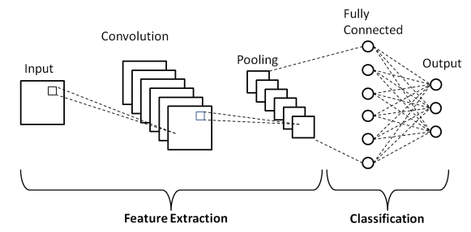
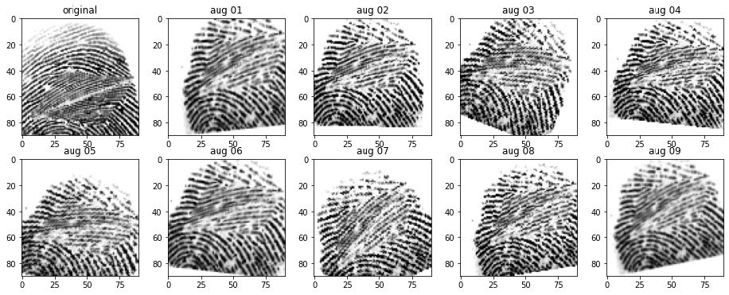
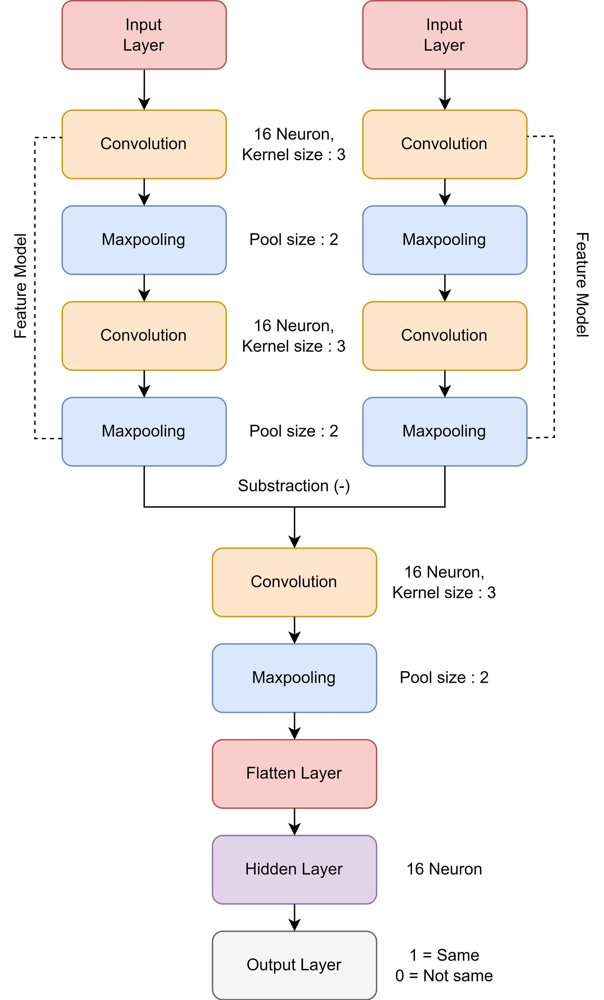
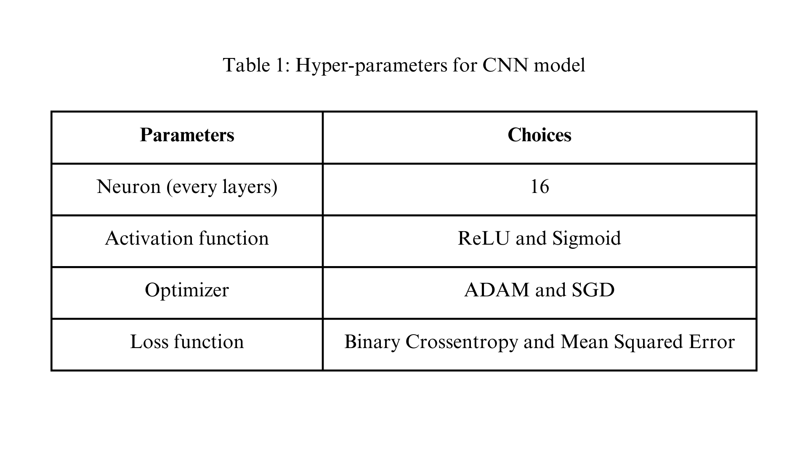
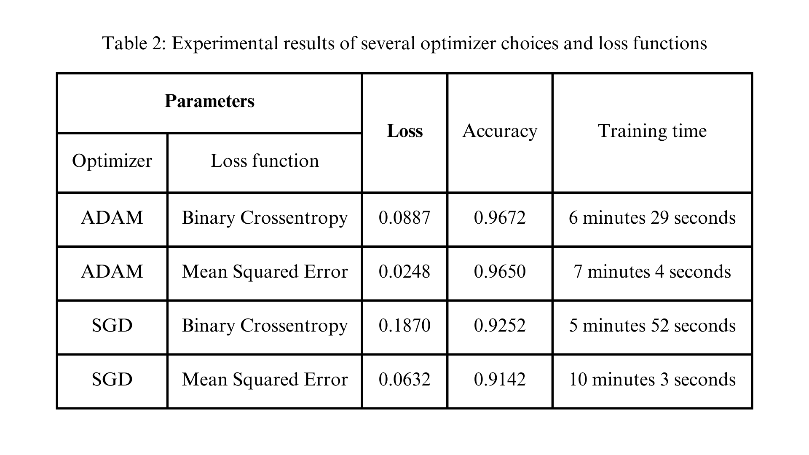
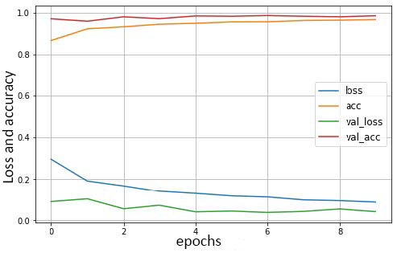
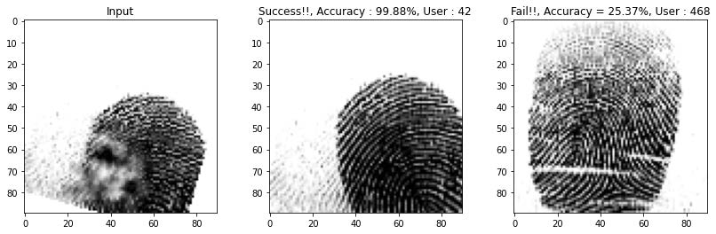

Overview
Biometrics for the Physical World
Traditional door locks rely on keys, PINs, or cards — all of which can be lost, stolen, or shared. Biometric systems offer a fundamentally more secure alternative: your body is the key.
This project (built as a team of two) proposes a CNN-based fingerprint recognition system applied to an IoT door lock. We trained on 6,000 fingerprint images from 600 individuals and achieved 96.72% classification accuracy using ADAM optimization with Binary Crossentropy loss.
Background
Fingerprints & CNN Architecture
A biometric system is a pattern recognition system that identifies or verifies a person based on physiological characteristics. Advantages over traditional access control:
- More efficient — no physical key or card required
- Difficult to manipulate or spoof
- Stores complete access history for auditing
- Inherently personal — cannot be shared or transferred
Convolutional Neural Networks (CNN) were selected for this task due to their proven performance in image classification. CNNs consist of two core components:
- Feature Detection Layers: Convolutional layers extract ridges, whorls, and loop patterns from fingerprint images; pooling reduces dimensionality while preserving key features; ReLU introduces non-linearity
- Classification Layer: A fully connected layer maps extracted features to binary output (match / no match)

CNN model architecture — feature extraction layers and classification layer
Methodology
Dataset & Preprocessing
We used the Sokoto Coventry Fingerprint Dataset (SOCOFing) — an academic fingerprint database with 6,000 images from 600 individuals. Each image is annotated with gender, hand (left/right), and finger position (thumb through pinky), plus a modified version for variation.

Sample fingerprint images from the SOCOFing dataset used for training
Augmentation Pipeline
Raw fingerprint images were processed through the following steps before training:
- Grayscale Conversion: RGB (3 channels) → single grayscale channel to reduce model complexity
- Normalization: Pixel values scaled to [0, 1]
- Augmentation to simulate real-world variations:
- Blurring (simulates imperfect sensor capture)
- Random rotation up to ±30° (varying finger angles)
- Scale changes (different pressure levels and distances)

Augmentation pipeline — original fingerprint images with blur, rotation, and scaling applied
Results
Model Performance & Evaluation
We evaluated four model configurations across two loss functions and two optimizers:

Table 1: Hyperparameter configurations evaluated during model selection

Table 2: Accuracy and loss comparison across optimizer and loss function combinations — ADAM + Binary Crossentropy wins
The winning configuration (ADAM + Binary Crossentropy) delivered:
- 96.72% classification accuracy on test fingerprints
- Training time: 6 minutes 29 seconds (20 epochs with early stopping)
- Inference speed: <100ms per prediction — suitable for real-time lock operation

Training and validation accuracy/loss curves — model converges cleanly without overfitting
Prediction Output
The system produces a binary output for any fingerprint input:
- Match → "Success!!" — door unlocks
- No Match → "Fail!!" — user prompted to retry

Left: Program output for matched and unmatched fingerprint pairs — Right: Representative samples from the test set
Future Work
Recommendations & Extensions
- Hardware Integration: Deploy model on Raspberry Pi or ARM microcontroller for true IoT door lock operation
- Multi-Modal Biometrics: Combine fingerprint with facial recognition or iris scan for layered security
- Liveness Detection: Add anti-spoofing layer to detect fake fingerprints (printed photos, silicone molds)
- Privacy-First Storage: Store only encrypted fingerprint templates — never raw images
- Audit Logging: Log all access attempts with timestamps, confidence scores, and user IDs
- Continuous Learning: Retrain periodically as authorized user fingerprints evolve over time
Tools Used